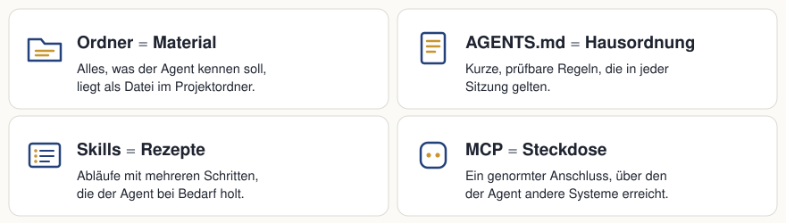

19 Chat oder Agent?
Ein Chat-Assistent und ein Agent nutzen oft dasselbe Sprachmodell (das KI-Modell, das den Text erzeugt). Der Unterschied liegt im Arbeitsplatz. Der Chat sieht nur, was wir ins Eingabefeld schreiben oder hineinkopieren. Der Agent arbeitet in einem Ordner auf unserem Rechner, öffnet dort selbst Dateien und legt seine Ergebnisse als Dateien ab. Sobald Material schon als Dateien vorliegt oder ein Ergebnis als Datei entstehen soll, spart der Agent die Kopierarbeit in beide Richtungen.
19.1 Zwei Arten zu arbeiten
Ein Chat-Assistent antwortet auf das, was im Eingabefeld steht. Für drei Kundenanfragen heißt das: jede Anfrage öffnen, den Text kopieren, in den Chat einfügen, um eine Sortierung bitten und die Antwort danach von Hand in eine Datei übertragen. Beim nächsten Mal beginnt das Kopieren von vorn.
Ein Agent arbeitet in einem Ordner. Er liest Dateien, legt neue an und führt Befehle aus. Ein Befehl ist hier ein kleines Programm, das der Agent startet, etwa um eine Datei umzuwandeln oder einen Ordner zu durchsuchen. Vor jeder Änderung und vor jedem Befehl fragt der Agent nach oder zeigt, was er vorhat. Für dieselben drei Anfragen genügt ein Satz: „Sortiere die Anfragen in anfragen/ nach Dringlichkeit und schreibe das Ergebnis in UEBERSICHT.md.“
| Chat-Assistent | Agent im Ordner | |
|---|---|---|
| Woher kommt das Material? | Wir kopieren es ins Eingabefeld. | Der Agent öffnet die Dateien im Ordner selbst. |
| Wohin geht das Ergebnis? | Es steht als Text im Chat und wird von Hand übertragen. | Es entsteht als Datei im Ordner. |
| Was bleibt für das nächste Mal? | Der Chatverlauf, sofern wir ihn wiederfinden. | Die Dateien im Ordner, für jede neue Sitzung lesbar. |
| Wer behält die Kontrolle? | Wir, weil nichts außerhalb des Chats passiert. | Wir, weil der Agent vor Änderungen fragt. |
19.2 Ein Agent bei der Arbeit
Der folgende Nachbau zeigt einen typischen Agenten mit dem Ordner kundenanfragen: links der Dateibaum, in der Mitte der Editor mit dem Inhalt der gerade geöffneten Datei, rechts der Chat. Mit „Weiter“ klicken wir Schritt für Schritt durch die Sitzung. An der Rückfrage entscheiden wir selbst, ob der Agent die Datei anlegen darf.
Vier Dinge fallen auf. Der Auftrag nennt nur den Ordner und die Zieldatei; niemand kopiert eine Anfrage in den Chat. Der Agent öffnet jede der drei Anfragen selbst und liest die Zeile mit dem Anliegen. Bevor er etwas anlegt, fragt er. Und das Ergebnis steht danach als Datei im Ordner:
# Übersicht der Anfragen
Sortiert nach Dringlichkeit, dringendste zuerst.
| Rang | Datei | Anliegen | Grund |
|---|---|---|---|
| 1 | 2026-10-07-beschwerde.md | Reparatur nicht fertig | für Freitag zugesagt, keine Nachricht |
| 2 | 2026-10-05-terminwunsch.md | Termin für eine Reparatur | Termin nächste Woche gewünscht |
| 3 | 2026-10-06-preisfrage.md | Preis für eine Reparatur | keine Frist genannt |Die Datei bleibt liegen. Kommt morgen eine vierte Anfrage, ergänzt der Agent dieselbe Übersicht, statt eine neue Liste im Chat zu erzeugen. Zum Schluss meldet er, was sich im Ordner geändert hat: eine Datei angelegt, keine geändert. Diese Meldung machen wir im Kapitel AGENTS.md: die Hausordnung zur festen Regel.
19.3 Wann sich der Agent lohnt
Der Agent lohnt sich, wenn das Material schon als Dateien vorliegt oder das Ergebnis als Datei entstehen soll. Für eine kurze Frage ohne Material reicht der Chat. Vier Aufgaben aus dem Büroalltag zeigen die Grenze:
| Aufgabe | Material als Dateien? | Ergebnis als Datei? | Passendes Werkzeug |
|---|---|---|---|
| Eine Betreffzeile für eine E-Mail formulieren | nein | nein | Chat |
| Einen Satz ins Englische übersetzen | nein | nein | Chat |
| Eine Begrüßung für die Website vorschlagen | nein | kurzer Text | Chat |
| 40 Anfragen aus einem Ordner in eine Tabelle übertragen | ja | ja | Agent |
Die Begrüßung für die Website klingt nach Arbeit an einer Datei. Sie ist aber ein kurzer Text ohne Material, den wir an einer Stelle einfügen. Bei den 40 Anfragen dagegen liest der Agent den Ordner selbst und schreibt die Tabelle, ohne dass wir vierzigmal kopieren.
19.4 Vier Bilder für die Arbeit mit einem Agenten
Damit ein Agent verlässlich arbeitet, braucht er mehr als einen Auftrag. Vier Bilder fassen zusammen, was die folgenden Kapitel aufbauen:

- Ordner = Material. Alles, was der Agent kennen soll, liegt als Datei im Projektordner. Darum geht es in den Kapiteln Der Projektordner, Kontext bereitstellen, PDFs als Quellen und Laufend neue Dateien.
- AGENTS.md = Hausordnung. Kurze, prüfbare Regeln, die in jeder Sitzung gelten. Eine Sitzung ist eine Unterhaltung mit dem Agenten vom Start bis zum Schließen. Siehe AGENTS.md: die Hausordnung.
- Skills = Rezepte. Abläufe mit mehreren Schritten, die der Agent bei Bedarf holt. Siehe Skills.
- MCP = Steckdose. Ein genormter Anschluss, über den der Agent andere Systeme erreicht (MCP steht für Model Context Protocol). Siehe MCP und Konnektoren und Plugins.
19.5 Was der Agent können muss
Welches Werkzeug wir nutzen, ist für dieses Buch unerheblich. Es muss drei Dinge können:
- Es arbeitet in einem Ordner auf dem eigenen Rechner: Dateien lesen, anlegen und ändern.
- Es fragt vor Änderungen und vor dem Ausführen von Befehlen nach oder zeigt die Änderungen zur Prüfung.
- Es liest eine Anweisungsdatei im Projektordner. Das ist eine Datei mit Regeln, die der Agent zu Beginn jeder Sitzung von selbst öffnet:
AGENTS.mdoder der Name, den das Werkzeug dafür nutzt.
Die Installation erklärt dieses Buch nicht. Die Anleitungen der Hersteller stehen in der Übersicht unten. Einige Details hängen vom Werkzeug ab, etwa der Name der Anweisungsdatei oder der Ort für Skills. Statt sie für jedes Produkt nachzuschlagen, fragen wir den Agenten selbst. Diese Selbstauskunft ersetzt im Buch die Produktdokumentation: Jedes Kapitel enthält eine passende Frage zum Kopieren.
19.6 Übersicht nach Werkzeug
Diese Tabelle ist die einzige Stelle im Buch mit Produktdetails. Sie nennt drei verbreitete Agenten. Andere Werkzeuge funktionieren ebenso, wenn sie die drei Anforderungen oben erfüllen.
Stand: 17. Oktober 2026. Quelle ist jeweils die Dokumentation des Herstellers.
| Begriff | Claude Code | Codex | Antigravity |
|---|---|---|---|
| Anweisungsdatei | CLAUDE.md. Liest AGENTS.md nur, wenn kein CLAUDE.md vorliegt. Alternativ in CLAUDE.md die Zeile @AGENTS.md.1 |
AGENTS.md im Projektordner, zusätzlich global in ~/.codex/.2 |
AGENTS.md oder GEMINI.md, zusätzlich Regeln in .agents/rules/.3 |
| Skills-Ordner | .claude/skills/ im Projekt, persönlich ~/.claude/skills/.4 |
.agents/skills/ im Projekt, persönlich ~/.agents/skills/.5 |
.agents/skills/ im Projekt, global ~/.gemini/config/skills/.6 |
| MCP-Konfiguration | Datei .mcp.json im Projekt, Befehl claude mcp add.7 |
Datei .codex/config.toml im Projekt oder ~/.codex/config.toml, Befehl codex mcp add.8 |
MCP Store im Agent-Panel, Datei mcp_config.json.9 |
| Plugins und Konnektoren | Plugins aus Marketplaces, Befehl /plugin.10 Konnektoren (Connectors) in den Claude-Apps, je Werkzeug freigebbar.11 |
Plugins bündeln Skills und MCP-Server, Befehl /plugins in der CLI; die IDE-Erweiterung unterstützt keine Plugins. Ein eigener Begriff „Konnektor“ ist nicht belegt.12 |
Plugins mit plugin.json, Befehl /plugin, Marketplace in App und CLI.13 |
| Installationsanleitung | code.claude.com/docs | learn.chatgpt.com/docs | antigravity.google/docs |
Ein Pfad mit ~ liegt im eigenen Benutzerordner und gilt für alle Projekte. Pfade ohne ~ liegen im Projektordner und gelten nur dort. Ein Punkt am Anfang eines Ordnernamens (.agents/) bedeutet, dass der Ordner im Dateimanager meist ausgeblendet ist. Die Begriffe Skills, MCP, Plugins und Konnektoren erklären die späteren Kapitel.
Hersteller ändern Dateinamen und Speicherorte. Weicht der eigene Agent von der Tabelle ab, gilt seine Selbstauskunft. Die Kapitel dieses Buches nennen deshalb keine Produktpfade und bleiben gültig, wenn sich eine Zeile hier ändert.
19.7 Selbsttest des Werkzeugs
Mit einem leeren Testordner prüfen wir, ob das eigene Werkzeug die Mindestanforderung erfüllt. Den Ordner agent-test nutzen wir im Kapitel Markdown weiter.
Voraussetzung: Der Agent ist nach der Anleitung des Herstellers installiert und gestartet.
Einen leeren Ordner
agent-testanlegen, etwa im OrdnerDokumente.Den Ordner
agent-testim Agenten öffnen.Diesen Auftrag senden:
Lege in diesem Ordner die Datei hallo.md an. Inhalt: eine Überschrift „Test“ und ein Satz, welches Datum heute ist. Frage vorher, ob du die Datei anlegen darfst.Prüfen: Der Agent fragt vor dem Anlegen nach oder zeigt die Änderung zur Freigabe.
Das Anlegen freigeben.
Prüfen: Im Ordner
agent-testliegt die Dateihallo.md.
Prüfkriterium: Die Prüfungen in Schritt 4 und Schritt 6 bestehen. Dann erfüllt das Werkzeug die Mindestanforderung.
Legt der Agent die Datei ohne Rückfrage an, läuft das Werkzeug wahrscheinlich in einem Modus ohne Rückfragen. Die Einstellung steht in der Anleitung des Herstellers. Erst weiterarbeiten, wenn der Agent vor Änderungen fragt.
Welche Anweisungsdatei das eigene Werkzeug liest, verrät der Agent selbst. Diese Frage im Ordner agent-test senden:
Welche Datei im Projektordner liest du automatisch als Anweisung? Nenne den Dateinamen und den Ort. Nur antworten, nichts ändern.Die Antwort nennt einen Dateinamen. Wir brauchen ihn im Kapitel AGENTS.md: die Hausordnung.
Claude Code, „How Claude remembers your project“: https://code.claude.com/docs/en/memory↩︎
Codex, „AGENTS.md“: https://learn.chatgpt.com/docs/agent-configuration/agents-md↩︎
Antigravity, „Rules“: https://antigravity.google/docs/rules/↩︎
Claude Code, „Skills“: https://code.claude.com/docs/en/skills↩︎
Codex, „Build skills“: https://learn.chatgpt.com/docs/build-skills↩︎
Antigravity, „Skills“: https://antigravity.google/docs/skills/↩︎
Claude Code, „MCP“: https://code.claude.com/docs/en/mcp↩︎
Codex, „MCP“: https://learn.chatgpt.com/docs/extend/mcp↩︎
Antigravity, „MCP“: https://antigravity.google/docs/mcp/↩︎
Claude Code, „Plugins“: https://code.claude.com/docs/en/plugins↩︎
Claude Help Center, „Use connectors to extend Claude’s capabilities“: https://support.claude.com/en/articles/11176164-use-connectors-to-extend-claude-s-capabilities↩︎
Codex, „Plugins“: https://learn.chatgpt.com/docs/plugins↩︎
Antigravity, „Plugins“: https://antigravity.google/docs/plugins/↩︎